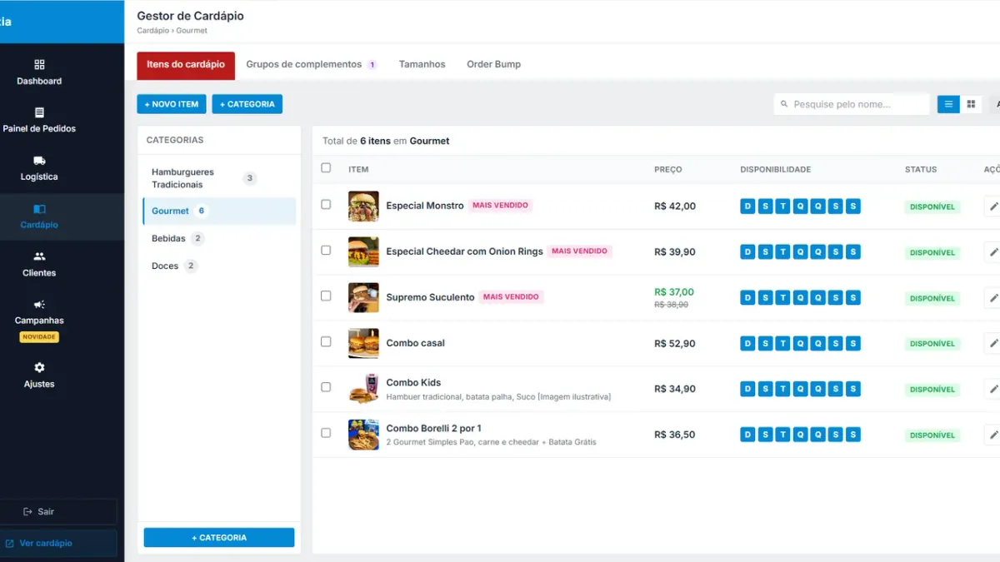

Como cadastrar adicionais, complementos e tamanhos no cardápio digital

Um cardápio bem cadastrado vende sozinho — e um mal cadastrado gera mensagem no WhatsApp perguntando "dá pra tirar a cebola?". Este tutorial mostra como estruturar categorias, itens, complementos, tamanhos e order bump.
1. Categorias: poucas e na ordem certa
Ordem que vende mais: carro-chefe primeiro (ex.: Hambúrgueres Gourmet), depois combos, acompanhamentos, bebidas e sobremesas. Evite mais de 6–8 categorias. No Menuzia, em Cardápio › + Categoria.
2. Itens: foto, nome e descrição que dá fome
- Foto de verdade, com luz natural e fundo limpo. Item sem foto vende muito menos.
- Nome curto + descrição com os ingredientes: "Pão brioche, 2 smash 90g, cheddar, bacon e molho da casa".
- Preço promocional com o valor antigo riscado quando fizer sentido.
- Disponibilidade por dia da semana para item que só existe no fim de semana.
3. Grupos de complementos (o que mais confunde)
Complemento é tudo que o cliente escolhe dentro do item. Crie grupos reutilizáveis e ligue aos itens:
| Grupo | Tipo | Exemplo |
|---|---|---|
| Ponto da carne | Obrigatório, escolhe 1 | Mal passado / Ao ponto / Bem passado |
| Adicionais | Opcional, até 5, pago | Bacon +R$4, Cheddar +R$3, Ovo +R$2 |
| Retirar ingredientes | Opcional, grátis | Sem cebola, Sem picles |
| Molho extra | Opcional, até 2 | Barbecue, Maionese verde |
| Borda (pizza) | Opcional, escolhe 1 | Catupiry +R$16, Cheddar +R$14 |
Regra de ouro: se a cozinha pergunta, vira complemento. "Ponto da carne" obrigatório elimina a mensagem de WhatsApp e já sai impresso na comanda embaixo do item.
4. Tamanhos
Para pizza, açaí, porções e bebidas, use a aba Tamanhos em vez de cadastrar o mesmo item três vezes. Fica um item só — "Pizza Calabresa" — com P, M e G, cada um com seu preço.
5. Order bump: o adicional que aumenta o ticket
Order bump é a oferta rápida na hora de fechar: "Leve uma batata média por +R$9?". Escolha 1 ou 2 itens de margem alta e fácil preparo (batata, refrigerante, sobremesa). No Menuzia fica na aba Order Bump do gestor de cardápio.
Checklist final
- Faça um pedido de teste com todos os complementos e veja como sai na comanda impressa.
- Confira o cardápio no celular — é lá que 90% dos clientes vão pedir.
- Gere o QR Code do cardápio para embalagem e mesa.
Montando do zero? Veja também como criar cardápio digital para hamburgueria e cardápio digital para pizzaria.
Perguntas frequentes
Qual a diferença entre complemento e adicional?
Adicional é um tipo de complemento pago (ex.: bacon extra). Complemento é qualquer escolha dentro do item, inclusive gratuita ou obrigatória, como o ponto da carne.
Como cadastrar pizza meio a meio e tamanhos?
Use a aba Tamanhos para P, M e G no mesmo item e grupos de complementos para borda e sabores, conforme a regra da sua pizzaria.
Quantos itens o cardápio de delivery deve ter?
Cardápios enxutos vendem mais e desperdiçam menos. Para começar, 8 a 20 itens bem fotografados costumam bastar.
Pare de pagar comissão por pedido
Tenha seu cardápio digital próprio por R$67/mês fixo. Nós configuramos pra você e damos todo o suporte técnico.
Criar Meu Cardápio Agora →